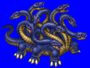
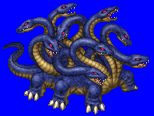
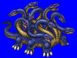
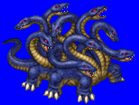

Height: About 10 meters Weight: Around 1 ton
Habitat: Marsh, swamp Origin: Greece
Meaning: Greek "hydra" meaning 'water snake"
Hydras are multiheaded snakes. The number of heads in different depictions ranges from 5 to over 10000, but the generally accepted number is nine, with one head being immortal. When one of a hydra's heads is destroyed, two grow back in its place. This can be prevented by burning the stump of the destroyed head before the new heads can grow in its place. The blood of a hydra is a deadly poison that Heracles was able to use to his advantage in his Twelve Labors.